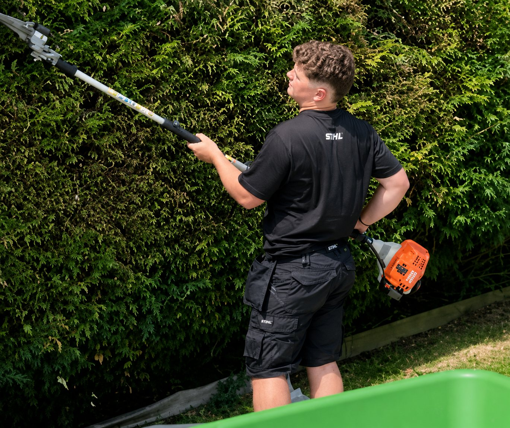
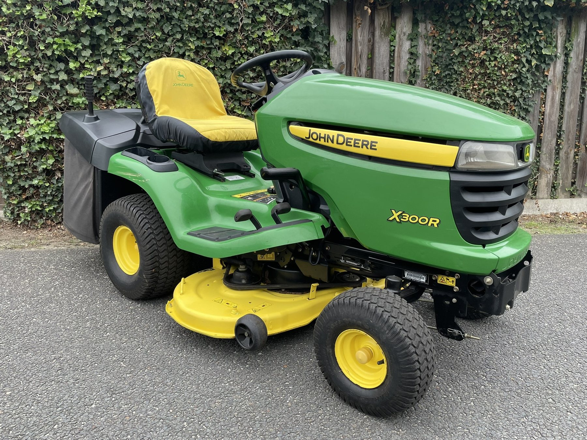

Entretien de pelouses
Tonte, bordures, finitions et remise en ordre pour conserver un extérieur propre.
Étudiant indépendant • Binche & alentours
Victor Rainchon Espaces Verts accompagne les particuliers pour l’entretien, la taille, la tonte et la remise en ordre de leurs extérieurs.
Une approche moderne des espaces verts
Chaque jardin est différent. L’objectif est simple : intervenir avec soin, respecter votre extérieur et laisser un résultat propre, net et agréable.
Services
Des interventions ponctuelles ou régulières, toujours sur devis gratuit et personnalisé.
Tonte, bordures, finitions et remise en ordre pour conserver un extérieur propre.
Taille soignée, entretien des formes et nettoyage du chantier après intervention.
Remise en état de zones envahies, abords, talus et parties difficiles d’accès.
Petits aménagements, entretien de massifs, plantations et conseils adaptés.
Ramassage, soufflage, évacuation possible des déchets verts et finitions propres.
Passages planifiés selon la saison et les besoins de votre jardin.

À propos
Étudiant en gestion horticole, Victor Rainchon a créé son activité pour proposer aux particuliers un service de proximité, sérieux et réactif.
Le positionnement est simple : un contact direct, un travail propre, du matériel adapté et une vraie attention aux détails.
Matériel

Réalisations
Zone d’intervention
Interventions principalement à Binche, Épinois, Buvrinnes, Leval, Anderlues, Morlanwelz, La Louvière, Estinnes et alentours.
Contact
Expliquez brièvement votre besoin. Vous pouvez aussi joindre des photos par e-mail ou via Facebook.